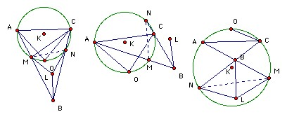

O is the circumcenter of the triangle ABC. K is the circumcenter of AOC. The lines AB, BC meet the circumcircle of AOC again at M, N respectively. L is the reflection of K in the line MN. Show that the lines BL and AC are perpendicular.
Solution

We start by showing that ∠MCB = ∠MBC. The argument is slightly different in the three different cases. In the first we have: ∠MCB = ∠MCO + ∠OCB = ∠MAO + ∠OBC = ∠MBO + ∠OBC = ∠MBC. In the second case we have ∠MCB = ∠OCB - ∠OCM = ∠OBC - ∠OAB = ∠OBC - ∠OBA = ∠MBC. In the third case we have ∠MCB = ∠MCO - ∠OCB = (180o - ∠OAB) - ∠OBC = 180o - ∠OBA - ∠OBC = ∠MBC.
Next we show that L is the circumcenter of MNB. In all cases we have ∠MLN = ∠MKN. In the first case, ∠MKN = 2∠MCN = 2∠MBN. But LM = LN (because KM = KN), so L is the circumcenter. In the second case, ∠MKN = 2∠MAN = 2∠MCB = 2∠MBN and then as before. In the third case, ∠MKN = 2∠MCN = 360o - 2∠MBN. So 360o - ∠MLN = 2∠MBN, so L is the circumcenter.
Finally, we have ∠MLB = 2∠MNB = 2∠A. Hence ∠MLB = 90o-∠A.

© John Scholes
jscholes@kalva.demon.co.uk
4 March 2004
Last corrected/updated 4 Mar 04